Allergen clearance and recall watch for online grocers. Every decision is cited and every release is signed.
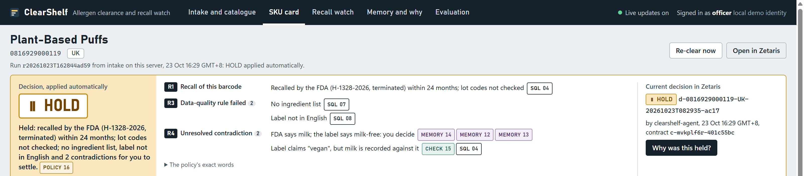
The grocer also sells US- and EU-made packaged food. The officer signs off the allergen information shown before purchase, which Reg. (EU) 1169/2011 Art. 14 requires for distance selling (retained in UK law), and pulls or relabels live listings when an FSA or FDA notice lands.
Open Food Facts lists Plant-Based Puffs (UPC 816929000119) as vegan, with no allergen tags and no ingredient list. FDA recall H-1328-2026 (Class I, reported 2026-09-09) says the product "tested positive for undeclared milk". Reconciled by hand, a wrong "free-from" listing can stay live.
ClearShelf reconciles these sources for each product and market, cites every claim, holds anything unsettled on its own, and clears only with the officer's signature.
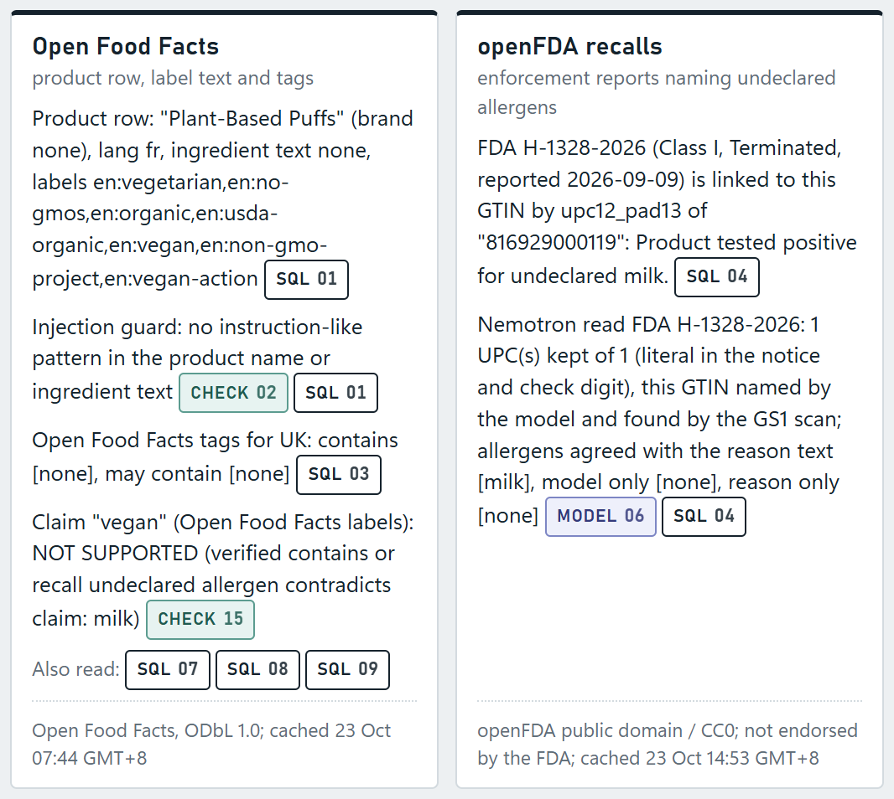
Cocoa butter is not milk. "May contain" is precautionary. Labels arrive in German, French and Italian.
Source against source, model against verifier, memory against source, rule against rule: each is queued for the officer, never settled by the last write.
Officer rulings and verified extractions persist in H-MEM. New standing rules come only from proposals a human approves.
The agent may HOLD or BLOCK on its own, the safe direction. CLEAR and RELEASE need the officer's signed contract.
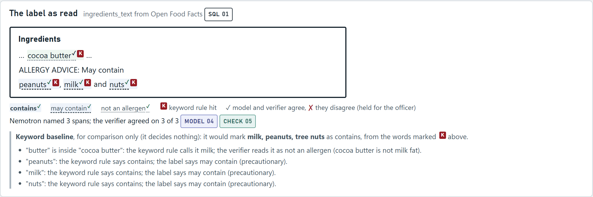
Measured on 27 SKUs, 23 Oct 2026 (docs/eval-report.md, section 3). The lexicon verifier alone, no model: 1/15 and 26/27, partly because the reference labels use its word list (slide 8).
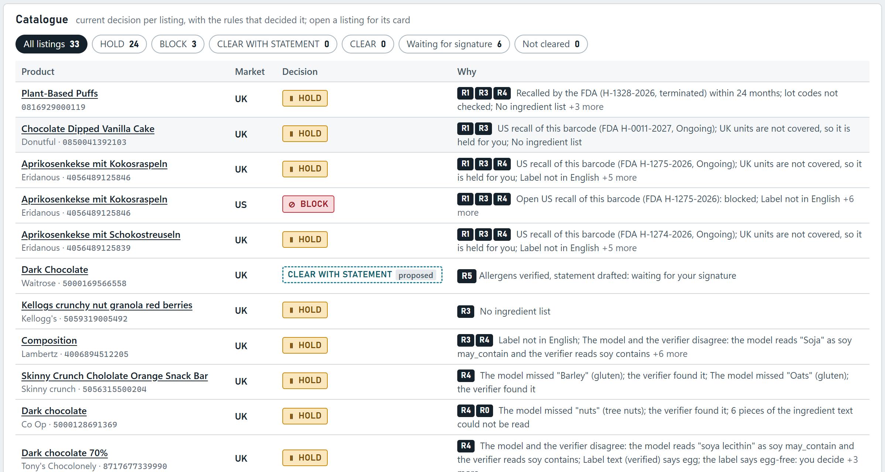
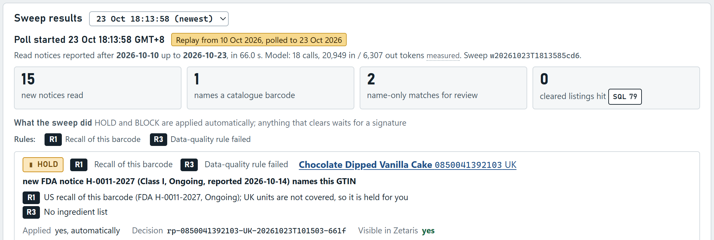
RELEASE of a hold also needs a signed contract. Open Food Facts stands in for the grocer's supplier or PIM feed.
Four Lightning databases: openFDA (1,000 reports), UK FSA (200 alerts; double explode gives 349 alert-allergen rows), one Open Food Facts table per product (30 catalogue products; 40 registered, including 10 eval-only), and the ops store. Zetaris counts equal the source JSON counts.
A new barcode at intake makes the registrar create its Open Food Facts table, DESCRIBE it, CACHE it and re-activate the USL product table. The cache is driver-wide: a cached openFDA count takes about 0.1 s, against 0.9 to 2.8 s uncached.
clearance_usl: 9 tables, 22 DQ rules (9 primary key, 8 foreign key, 5 custom). Any invalid record for the product holds it under R3. At onboarding: has_ingredients 3 of 30 invalid, english_label 5 of 30, market_code 6 of 111.
Every claim on a card links to the Lightning SQL that produced it, with its sha256, objects, source URL, licence and cache time. Re-running all 95 cited Zetaris and DQ records returned every cited row (95/95).
Decisions are federated back as clearance_usl.decision and re-read in the "why" trace and the recheck. After every signed write, the signed_clear DQ rule checks the row: a signed clearance passed, a synthetic unsigned row was flagged. Join map: 11 UPC-12 and 3 EAN-13 links, 0 orphans.
Limitation: the least-privilege reader role is not configured, so reads run on the admin login behind the gateway's read-only allowlist.
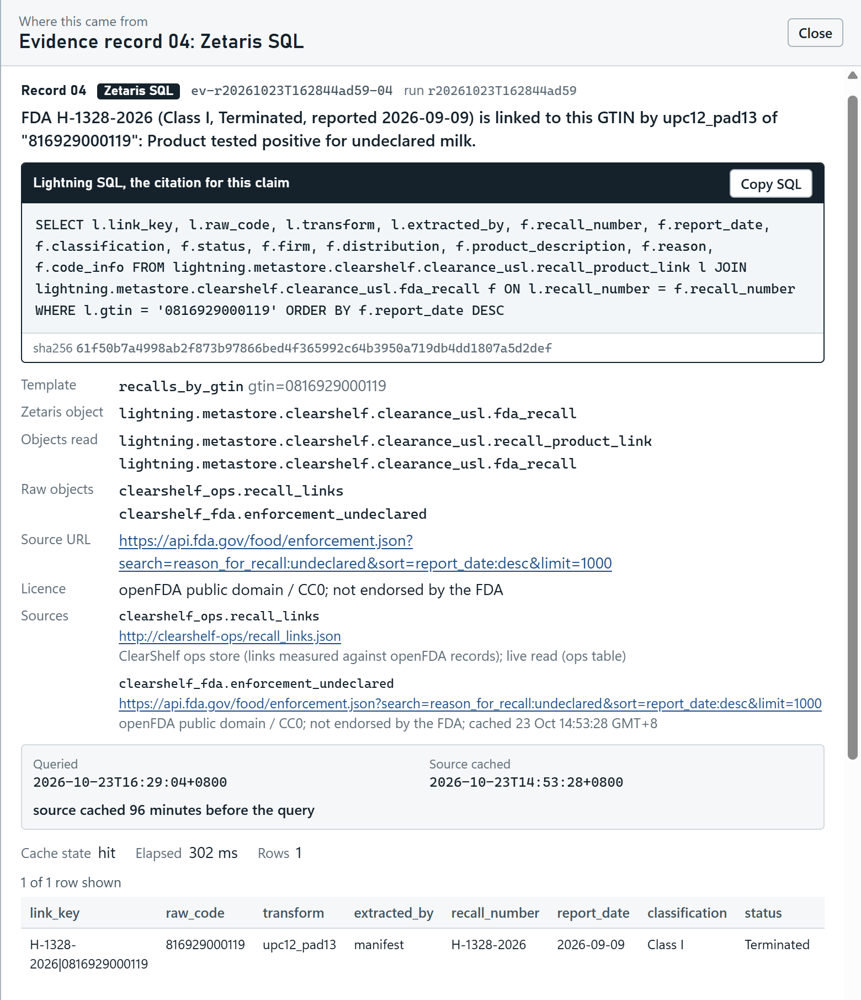
Vendored reference, unmodified. Nemotron plans the next tool call; each chunk carries a bounded state (768-token budget, peak 474, estimated). Measured prompts stay between 1,322 and 1,788 tokens per chunk. Two investigations re-sent with their full history measured 4,641 and 6,829 tokens by the last chunk: the Markovian prompts were 48% and 58% smaller in total.
Vendored reference plus an allergen-conflict module. Facts carry Zetaris provenance; conflicts are always queued (11 pairs now); the ledger answers "Why was this held?". A warm run reused a verified extraction: tool-model tokens 3,658 → 804.
Vendored reference. Product, brand, firm, notice and allergen graph with a timeline and a merge review queue; re-ingesting the catalogue and live Zetaris rows gives an empty diff.
Partly reimplemented from the spec (no reference engine is vendored). The injection guard flags 7/7 Scout injection cases, passes 3/3 clean ones, and flagged 0 of 146 real texts. Contracts are HMAC-signed and single-use.
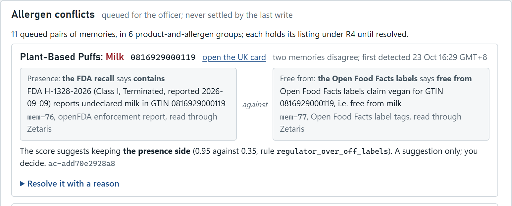
| Measure | K keyword | L lexicon alone | N Q4_K_M | N+V Q4 | N Q8_0 |
|---|---|---|---|---|---|
| "Contains" P / R (80 positives) | 0.71 / 0.99 | 0.97 / 0.97 | 1.00 / 0.78 | 1.00 / 0.78 | 1.00 / 0.84 |
| Trap false alarms (cocoa butter, coconut…) | 5/15 | 1/15 | 0/15 | 0/15 | 0/15 |
| "May contain" read exactly | 0/27 | 26/27 | 18/27 | 18/27 | 16/27 |
| German labels (4), recall | 0.95 | 0.95 | 0.50 | 0.50 | 0.70 |
| English labels (21), recall | 1.00 | 0.98 | 0.90 | 0.90 | 0.90 |
Two independent readers: together the model and the lexicon missed 1 of the 80 "contains" pairs (the lexicon found 17 of the model's 18 misses, the model 1 of the lexicon's 2), and every disagreement holds the listing. Alone, the lexicon scores best, partly because the reference labels use its rules. Q8_0 lifts German recall from 0.50 to 0.70 at 113 against 154 tok/s and 1,185 MiB more VRAM, so Q4 stays.
Ritz Cracker Sandwiches, US: same 5 chunks and decision; tool-model tokens 3,658 → 804 in and out; wall time 61.1 s → 48.1 s.
505 FDA notices: UPC P / R 0.996 / 0.994 for the GS1 scan, 0.981 / 0.879 for Nemotron. The scan and the lexicon decide; the model found the scan's 4 misses (705 of 705 together, pooled).
Thinking on: 10/10 planner replies valid, but only 2/10 extractions (the reasoning hit the 4,096-token cap). So the planner thinks; extraction does not.
Same decision, rules and statement in all 8 investigations, two runs each, 3.3 to 3.5 times faster: the decision does not depend on the model's plan. The planner adds a note per step.
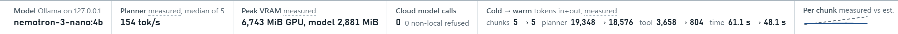
FDA's allergen Q&A (Edition 5, January 2025) removed coconut from the tree-nut list, and UK/EU Annex II does not list it. Recall H-1275-2026 (Lidl's Eridanous apricot biscuits with coconut) still says "tree nut (coconut)". ClearShelf records a rule conflict instead of a tree-nut allergen.
Of the latest 1,000 openFDA "undeclared" reports, 533 mention a UPC, GTIN, EAN or barcode, and 442 contain a code that passes the GS1 check digit.
Product details hold names only, so an FSA match is name-only: it becomes a review item for the officer (Skinny Crunch, similarity 0.28), never an automatic action.
The Open Food Facts tag de:blé on the same biscuits maps to UK:blé, which Zetaris DQ reports as a foreign-key orphan, and the listing is held under R3.
On the same label, an address line pasted into the Open Food Facts ingredient field splits "noix de coco", so the verifier reads "noix" as walnut. The draft marks it "(to confirm)", and a statement with "(to confirm)" cannot be signed.
Open Food Facts search returned HTTP 503, and the product endpoint returned 429 on 10 of 549 curation calls. ClearShelf spaces its calls 5 s apart by default (never below 2.5 s) and caches every table in Zetaris.
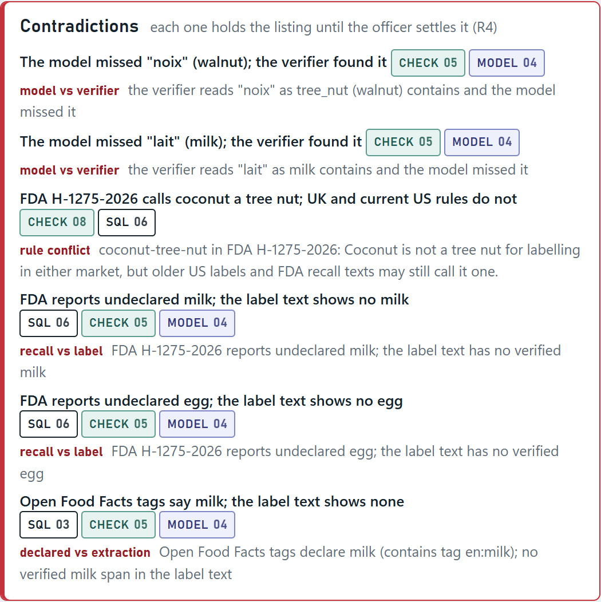
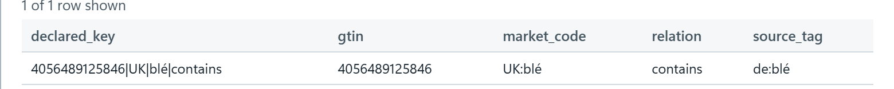
declared_allergen: the orphan row, cited in the evidence drawer.The clearance USL's DQ rules sit in front of CLEAR: one invalid record holds the listing.
Regulations that disagree (coconut) are queued like any other contradiction.
HOLD and BLOCK run on their own. CLEAR and RELEASE need a single-use HMAC contract bound to the exact values, valid for 15 minutes; a replayed or edited contract is refused.
SQL text, sha256 and cache time on every claim; the "why" trace and the ledger point to the same records.
| Scenarios E1–E10 | 10/10 pass |
| Card claims cited (E-cov) | 100% |
| Policy firings / review items cited | 43/43, 37/37 |
| Records with every required field | 200/200 |
| Cited SQL re-run returns the rows (E-replay) | 95/95 |
| Contradictions surfaced (E-contra) | 3/3 |
| Spans not in the source, kept | 0 (1 dropped, counted) |
| CLEAR on a product with an ongoing exact recall | 0 |
| CLEAR or RELEASE executed without a signed contract | 0 |
Zetaris signed_clear: signed row / synthetic unsigned row | passed / flagged |
| Agent tests / gateway tests | 421 / 199 pass (4 skipped) |
A scenario passes on the exact decision and the rules it expects, written by the author; five also fired other rules (docs/eval-report.md, section 1). E8 is a synthetic injection fixture, labelled and eval-only. E2 is a replay and is labelled as one on every row it writes.
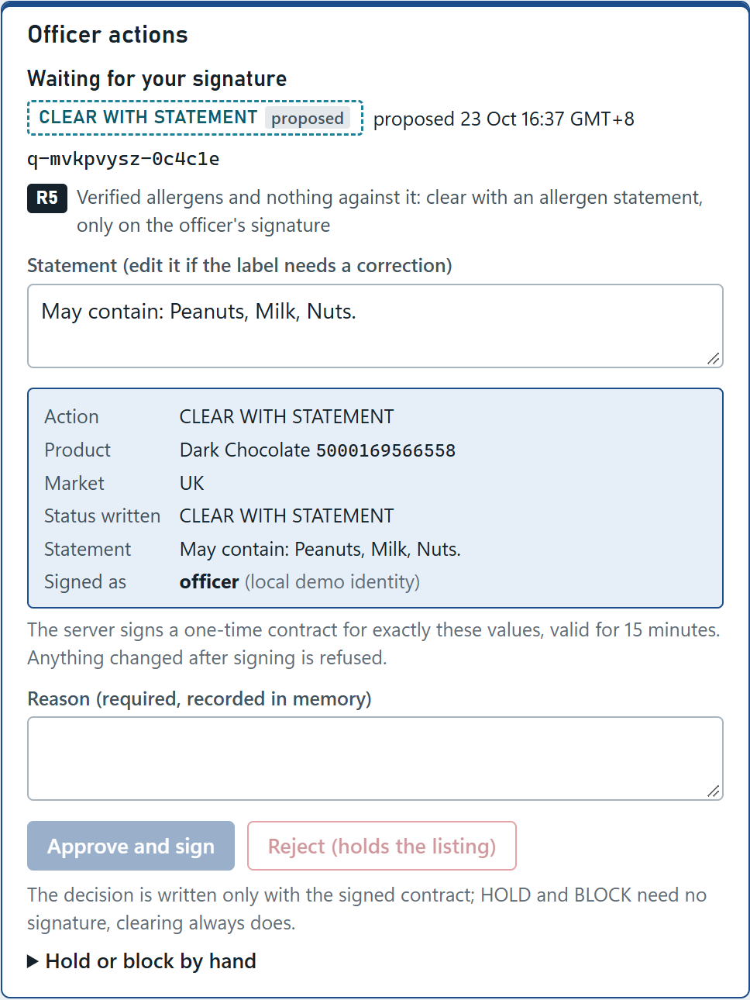
Nemotron's "contains" recall is 0.78 overall and 0.58 on the six non-English labels; the lexicon verifier alone reached 0.97 (partly circular). Misses are held for the officer, never cleared.
Investigations take 48 to 94 s on the local 4B model, one call at a time.
Extraction is scored on 27 products; the 10 eval-only products are registered in Zetaris but not yet in the USL product table.
The officer is a local demo identity with no sign-on, and Zetaris reads run on the admin login behind a read-only allowlist.
Open Food Facts can lag the physical label, and lot codes are not matched. Every card lists what was not checked.
Decision support only, not legal advice. ClearShelf never publishes a free-from claim on its own.
Replace the Open Food Facts stand-in with the grocer's own supplier feed, registered in Zetaris the same way.
Match recall code information against stock, so a recall holds only the affected lots.
Add RASFF notifications as a third notice feed, and further statutory allergen lists to the reference table.
Single sign-on in front of the officer endpoints, and a least-privilege Zetaris reader role.
Adopt the Q8 build (on 27 labels, recall 0.84 against 0.78 for Q4 and 0.70 against 0.50 on German, at 113 against 154 tok/s) or a larger tier, and measure the thinking ablation on multilingual labels.
.cursor/rules and AGENTS.md. Cursor Agent ran the Zetaris JDBC preflight against our local instance and drafted the SQL, verifier and test work in the table. Its Free plan then reached its usage limit, so the remaining planned Cursor tasks were not run by Cursor Agent. After an upgrade to the Pro plan it ran C9 (25 Oct 2026) and C10 (26 Oct 2026), which CI runs on every push. Every Cursor task, its commit and what was corrected afterwards are listed in docs/how-cursor-was-used.md.| Cursor Agent run | Scope |
|---|---|
| G9 | Task index in docs/cursor-tasks/README.md |
| C1 | Zetaris JDBC preflight against our local instance, read-only |
| C2 | Decision write-back SQL, Open Food Facts registration template, DQ rule documentation, static SQL tests |
| C3 | Multilingual allergen lexicon, jurisdiction rules, GTIN normaliser, claim tester, with tests |
| C9 | Clock-independent runtime tests (after the submission, Pro plan) |
| C10 | CI check that each README headline number matches its committed measurement in docs/eval (Pro plan) |
.cursor/ruleszetaris.mdc Lightning SQL rules · meterless.mdc engine contracts and the never-edit rule for vendored engines · safety.mdc decision safety and risk asymmetry · data-licences.mdc attribution and what data may be committed · style.mdc code, test and commit conventions